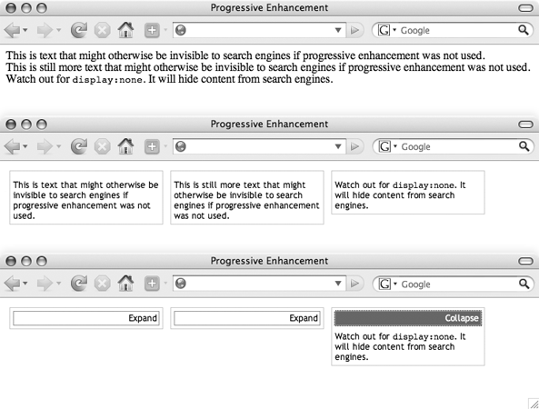
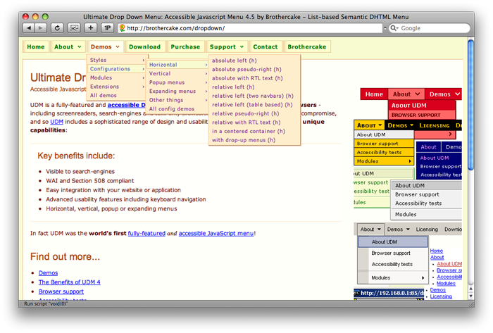
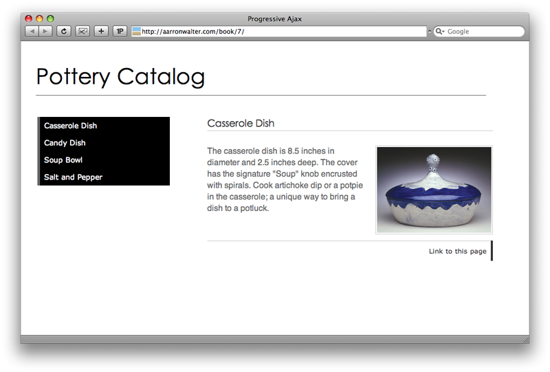
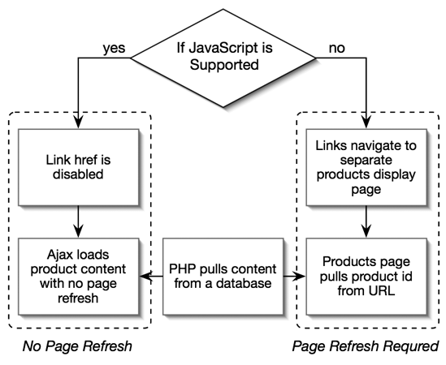
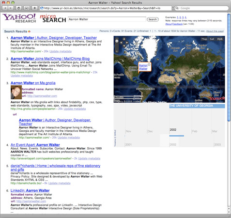

-
Findability Bliss Through Web Standards
Aarron Walter
-
These Concepts are Explained In The Book
-
Here’s Where I’m Going
- The Big Picture
- Practical Examples
- A Warm Fuzzy
- Free Stuff
-
We All Have the Same Goal
Connect with your audience
and stay connected
-
Findability’s primary goals are to help users …
- Find the websites they seek
- Find content within websites
- Rediscover the valuable content they’ve found
-
Finda–what?
Findability?
Don’t you mean SEO?
-
Findability is More Than Just SEO
-
Get The Big Picture
-
SEO Stigma - I feel icky, oh so icky
-
Let Go of the Stigma
Don’t be hatin’ on SEO, yo.
Your clients get it.
-
Clarity, Context, and Kindness
-
Findability & Web Standards Sittin’ in a Tree …
web standards +
compelling content =
* findability bliss *
- Findability and Web Standards have a symbiotic relationship. They serve one another.
- Well written, keyword-rich, compelling content presented in a machine readable format will generate traffic to your site
- Web standards are the secret to making your content machine readable and portable
-
The Web Standards Connection
- Semantic Markup is machine readable
- Accessibility makes content legible for search engines
- Progressive Enhancement removes search engine roadblocks (JavaScript, Ajax, Flash)
- Microformats re-discoverable content, targeted search
- Less code = more efficient indexing
- Semantic Markup
- Using HTML tags and elements to communicate the information hierarchy and meaning of your content - not because of how they make your content look
- Accessibility
- Making a website useable by as many people as possible (disabled users, users on alternate devices) without modification.
- Progressive Enhancement
- A way to present a JavaScript/Flash dependent interface so that the content is still accessible to search engines, users with disabilities, and users on alternate devices.
- Microformats
- A standardized grouping of HTML tags and elements to best communicate the content marked up
-
Semantic Markup Example: Image Replacement
<h1 id="logo" title="Fischer and Sons Funeral Home">
<span></span>Fischer and Sons Funeral Home
</h1>
#logo {width: 329px; height: 25px; position: relative; }
#logo span {
background: url(fischer-sons-funeral.gif) no-repeat;
position: absolute;
width: 100%; height: 100%; }
Dave Shea’s image replacement reference
-
Essential Markup for Keyword Placement
<title>- headings: use them wisely
<strong> & <em>meta description (don’t sweat meta keywords)- link labels
alt and title attributes- table elements
<th>, <caption>, and summary
-
Other Places to Include Keywords
- In your URLs
- In your style sheet’s file name
- In your logo’s file name
- Naturally in your content (7% or less)
-
Researching Keywords/Phrases
Research if targeting a specific market
Otherwise just stay on topic and communicate clearly with semantics
-
How Semantically Meaningful is Your Message?
Find out using the W3C’s
semantics extractor
(http://w3.org/2003/12/semantic-extractor.html)
-
Check Your Work: Sitening
http://sitening.com/seo-tools/
-
Accessibility: A More Complete Message
<acronym title="Web Content Accessibility Guidelines">
WCAG
</accronym>
<abbr title="Louisiana">LA</abbr>
Anticipate search behaviors
-
Presenting the Entire Message
-
Footnotes
<img src="logos.gif" alt="Client logos"
longdesc="#footnote" />
<a href="#footnote" title="Image description">D</a>
<a name="footnote"></a>
<div id="footnote">
<h4>Our Clients Include … </h4>
<ul>
<li> Yahoo! </li>
<li> John Deere </li>
<li> CNN </li>
…
</ul>
</div>
- Keep content in your page for keyword density and accessibility convenience
-
Progressive Enhancement: Clear the Roadblocks
Make content accessible when
JavaScript & Flash aren’t supported
-
Content is Accessible Without JavaScript

- JavaScript writes in expand/collapse links, which doesn’t pollute keyword density
-
Accessible Navigation: No JavaScript Required

James Edwards’ Ultimate Dropdown Menu
-
Ajax Pitfalls
Content loaded by Ajax is not accessible to search engines, and has no URL
-
A Search Engine Friendly Ajax Interface

- Navigation should work without JavaScript
- Unique pages should be provided for each product
-
A Search Engine Friendly Ajax Solution

-
Another Search Engine Friendly Ajax Solution
Don’t load important content
with Ajax
-
Findable Flash
Flash is a top level interface layer - enhance accordingly
- Search engines can read content within Flash, but the semantics are pretty rough
- Important Flash content needs to be presented in HTML first, then enhanced with Flash
-
SWFObject for Progressive Flash
JavaScript detects Flash support then embeds SWF into page
http://blog.deconcept.com/swfobject/
-
A Findable Flash Promo
<div id="flash-promo">
<a href="#promos" title="See our latest promotions">
<img src="images/promo.jpg"
alt="Save 10% on the Berry Bowl" />
</a>
</div>
- Use
longdesc to connect to t afoot note that provides text descriptions of every slide.
-
SWFObject in Action
<script type="text/javascript" src="js/swfobject.js">
</script>
<script type="text/javascript">
var so = new SWFObject("slideshow.swf",
"myswf","600","400","8","#ffffff");
so.write("flash-promo");
</script>
-
No Compromise Rich Interface
If you build intelligently, you don’t have to compromise the user experience
-
Microformats
The ultimate in semantic markup
http://microformats.org
-
Tim Berners-Lee’s Dream for the Web
The Semantic Web
Let agents do the work!
Berners-Lee on the Semantic Web
Berners-Lee discussing the Semantic Web on YouTube
- Search engines are our agents
- The semantic web using agents to perform tasks for us
- Content becomes machine readable
- Automation made possible
- Content becomes portable
-
Put it where you can find it!
-
Microformats: Standardized Markup
-
Do Search Engines Take Advantage of Microformats?
Not enough yet, but they’re heading in that direction
Technorati,
Yahoo! microSearch
-
Yahoo! microSearch

Yahoo! microSearch results for Aarron Walter
-
Will I Get a Search Ranking Boost for Validating?
Nope
Standards promote best practices, but a validation badge isn’t a backstage pass to the Google show.
-
The Strongest Argument for Standards
Websites that are findable can
reach more people and can be more profitable
-
The Day Findability Saved the World
The SARS virus
- GPHIN caught SARS epidemic 6 months before WHO
- 20,000 sites in 7 languages crawled
- What other world-wide changes could be made if our content was findable and machine readable? Imagine a series of medical microformats!
-
I’m happy to answer your questions
Findability Best Practices Guide
http://buildingfindablewebsites.com/findability-checklist.pdf
Join the conversation on the Facebook Group
Book site http://buildingfindablewebsites.com/
http://aarronwalter.com/